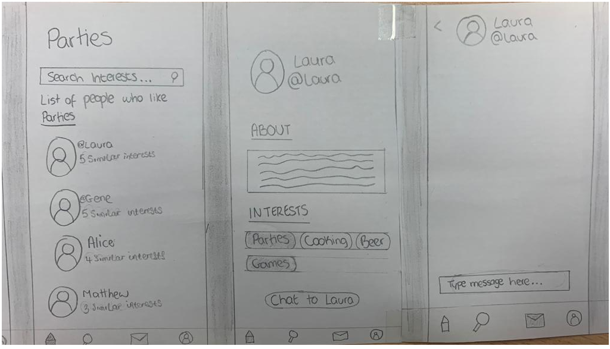
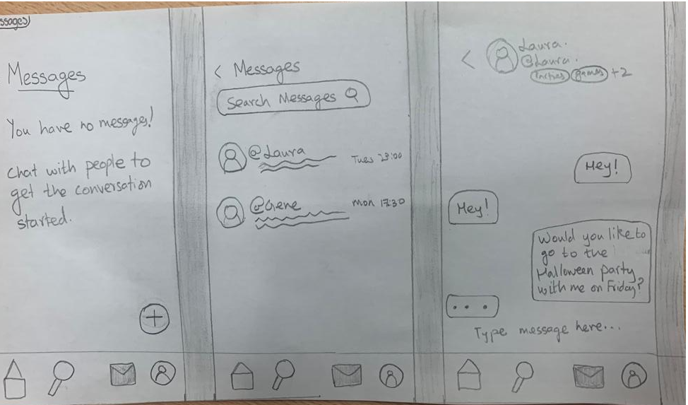
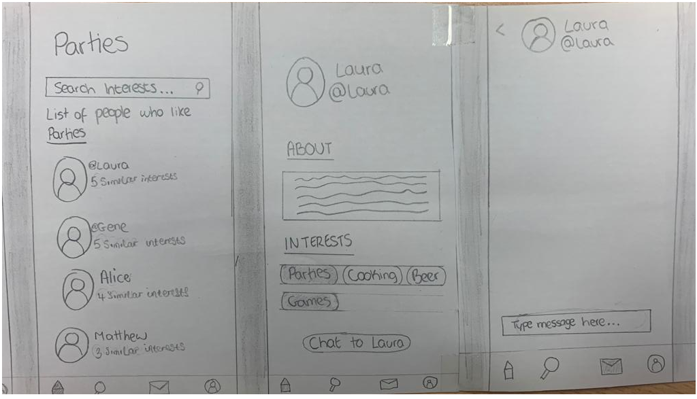
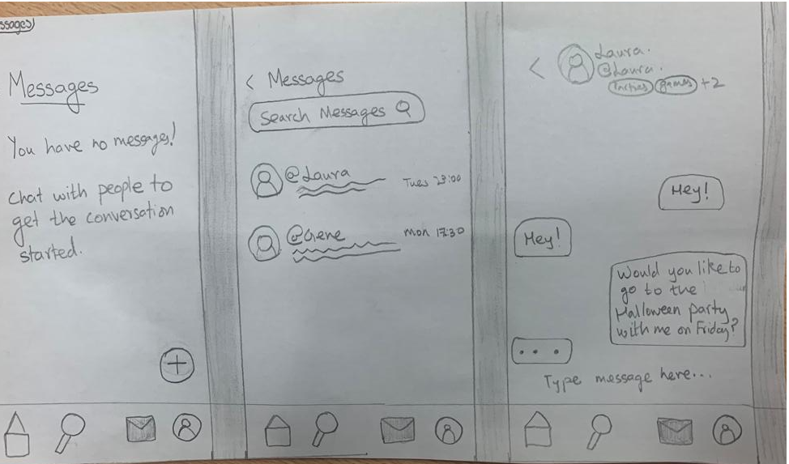
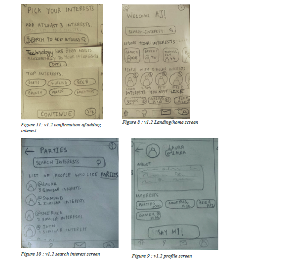
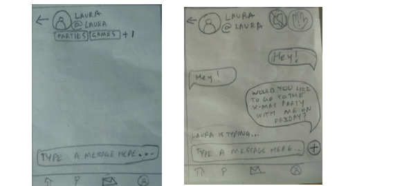
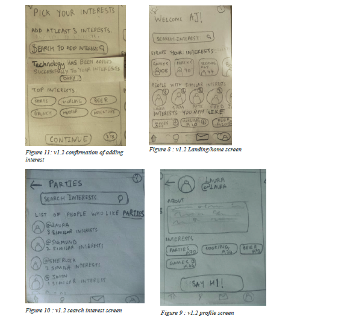
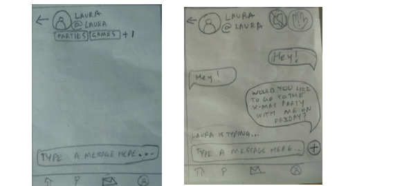

FarmWise
The FarmWise is a project that has been modelled keeping in mind the strong pillars of sustainability, reliability and transformation – that is, an application aimed to provide sustainability in the way the business is carried out, reliability of the platform being used to carry it out and transforming small businesses digitally eventually impacting lives at different points in the supply chain.
-
The various phases phases and processes that are covered in this case study can be given as :
- Background Research
- Design and Development plan - First Iteration
- Story Boarding
- Service Design
- User Personas
- Initial and final Design Prototypes
- Usability Analysis with respect to 10 Heuristics provided by Nielsen Norman Group
Motivation and Background Research
Having worked on multiple web and mobile applications spanning the agriculture sector, I saw a great opportunity to learn and explore this area in terms of digital transformation. Few of these applications and points of information that we looked into are :
“ The Export Services Portal is a central source of information to better equip Western Australian agrifood and fisheries exporters to develop their business. It’s a comprehensive and easy tool to identify the key export related services provided by government (State and Commonwealth) departments and industry bodies to Western Australian agrifood and fisheries exporters. ” (Agrifood and Fisheries Export Services Portal at https://export.agric.wa.gov.au/ )
The solution is offered by the Government of Western Australia, with insights into the offering of this web portal that connects small industries in the agriculture sector by providing information for developing various businesses.
This application has a great role to play in the conceptualisation of “FarmWise” as this portal aims at providing services and facilitating the business flow between Growers and Sellers. This idea became the seed for our application and we let it evolve and grow by defining functionalities and user flows. “connects fresh produce growers, merchants and buyers – online.
Phoenicia provides unprecedented visibility and transparency across the fresh produce value chain. With access to real time market data and the ability to manage your business when and where you choose, Phoenicia will save you time, strengthen your relationships, make you better informed and improve your decision making. It is the new way of doing business.” (Phoenicia at https://phoenicia.com.au/)
GAR is committed to be the leader in sustainable palm oil production by adopting best industry practices and standards, managing the environment responsibly, creating employment and empowering the communities.” (Sinarmas at https://www.sinarmas.com/en/agribusiness-and-food.html )
“Teagasc – the Agriculture and Food Development Authority – is the national body providing integrated research, advisory and training services to the agriculture and food industry and rural communities.” ( Teagasc at https://www.teagasc.ie/about/) Teagasc provides Farm Advisory services being a Agriculture and Food Development authority of Ireland.
Following this, semi-structured interviews with some of the canidates that were recruited from the university's postgraduate cohort were carried out, to understand the means to socializing in the campus and identify a problem space, if any.
It was found out that 3 out of 5 students who are new to the campus hesitate to socialize as they fear that they might not have the common interests to socialize with other campus members. Further, a mechanism to connect people with common interests was missing as the clubs and societies at that point were not fully functioning as it was the first time the campus had reopened for classes after Covid-19
A consensus was hence arrived at, to design an application that would enable people to connect upon matching their interests or would let them explore new interests and find buddies doing so.
features that were decided to be integrated were
Low Fidelity Prototype design - Pen and Paper
 



The Second Phase
Introduction to the second phase
This phase deals majorly with the evaluation of the UI design by carrying out the co-operative evaluation with the users, where they would test the usability of the low-fidelity prototype.
The technique that was fitting the requirement well, was found out to be summative evaluation. Usability tests were conducted along the guidelines of cognitive walkthrough, walkthrough with thinking aloud and cooperative evaluation, where the tasks had been laid out for the users to test that consisted of one major vertical task and 3 smaller feature tasks.
Recruitment and evaluation of the low fidelity prototype
There were 5 participants that were recruited. The background of these participants was majorly postgraduate students studying at University of Limerick, in different disciplines.
The recruited participants were briefed about the activity and the process when they were approached in order to obtain their informed consent
The participants were informed that they could leave at any point they felt uncomfortable during the usability testing session and the information they have shared would be kept confidential.
Re-design requirements
The following feedback points were found to be crucial and were the taken as the requirements for the re-designing of the application based on the feedback during the evaluation stage:
- Back navigation was missing in the application
- Picking Interest screen to be re-designed to enable the user to search and add the desired interest rather than add from a set of interests that are available
- “What if the user adds all the interests?” - the major bug that needed to be looked into.
- How to resolve privacy concerns?
- Adding a block/mute feature to avoid potential harassment on the platform
- As a minor enhancement, an app landing screen was envisioned that gives the option to login and sign up
Screens that are re-designed : low-fidelity
 




Final Interactive medium fidelity prototype on figma
The Fidelity of the prototype was increased to that of a medium fidelity and can be found below :
Prototype of UL Buddies App

Reflection
This was a great learning experience for me working in the academic environment and learning by witnessing through participation in all the phases in this iteration of design from right from ideation to design to low-fidelity to medium fidelity prototyping.
This project exercises the Ideate, Design, Prototype, Testing & Evaluation phases in the processes in an iterative fashion, where the Process is stopped during the second iteration after the prototype phase and before proceeding the second testing and evaluation phase.